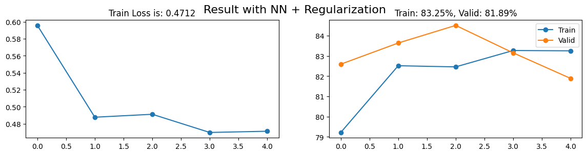

CUDA (Compute Unified Device Architecture): đề cập đến một nền tảng tính toán song song được phát triển bởi NVIDIA, một trong những nhà sản xuất card đồ họa và GPU lớn nhất trên thế giới. CUDA cho phép bạn sử dụng GPU (Graphics Processing Unit) của NVIDIA để thực hiện các tính toán không chỉ liên quan đến đồ họa, mà còn bao gồm các tác vụ tính toán tổng quát, bao gồm cả tính toán khoa học và máy học.
import torchimport torch.nn as nnclass Model(nn.Module):def__init__(self):super().__init__()# Assume 3 hidden layers, each with 200 unitsself.input= nn.Linear(784, 200)self.hd1 = nn.Linear(200, 200)self.hd2 = nn.Linear(200, 200)self.hd3 = nn.Linear(200, 10)self.layers = [self.input, self.hd1, self.hd2]def forward(self, x):# Forward passfor layer inself.layers: x = layer(x)# Apply ReLU Activation Function x = torch.relu(x) out =self.hd3(x)return outdef train_model(model, train_loader, valid_loader, \ loss_fn, optimizer_algorithm, lr, n_epochs, device):# Get the optimizer function based on the provided algorithm name opt_fn =getattr(torch.optim, optimizer_algorithm) optimizer = opt_fn(model.parameters(), lr=lr)# Lists to store losses and training accuracy losses = torch.zeros(n_epochs, len(train_loader)) train_acc = torch.zeros(n_epochs, len(train_loader)) valid_acc = torch.zeros(n_epochs, len(valid_loader))for epoch inrange(n_epochs):for i, (x, y) inenumerate(train_loader):### New code# Convert x, y to GPU x = x.to(device) y = y.to(device)############ out = model.forward(x)# Calculate loss loss = loss_fn(out, y)# Backpropagation loss.backward() optimizer.step() optimizer.zero_grad()# Store the loss losses[epoch, i] = loss.item()# Calculate training accuracy acc =100* (out.argmax(1) == y).float().mean() train_acc[epoch, i] = acc# Evaluation on validation datawith torch.no_grad():for j, (x, y) inenumerate(valid_loader):### New code# Convert x, y to GPU x = x.to(device) y = y.to(device)########## out = model.forward(x) acc =100* (out.argmax(1) == y).float().mean() valid_acc[epoch, j] = accreturn model, losses, train_acc, valid_acc
model = Model()### New code# Conver model to GPUmodel = model.to(device)model################
Chuyển đổi dữ liệu sang GPU là một quá trình đơn giản, tương tự việc bạn giao bài tập cho người bạn giỏi để làm giúp. Khi bạn đưa dữ liệu lên GPU, đó là như bạn đang sử dụng sức mạnh tính toán của GPU để thực hiện các phép tính. Khi bạn muốn sử dụng kết quả, bạn có thể dễ dàng đưa dữ liệu từ GPU trở lại CPU, giống như việc bạn lấy bài tập đã làm xong từ người bạn học giỏi để nộp cho giáo viên vậy.
import timestart_time = time.time()# Define the loss function (CrossEntropyLoss) and optimizer algorithm (Adam)loss_fn = nn.CrossEntropyLoss()optimizer_algorithm ="Adam"# Set the learning rate and number of training epochslearning_rate =0.01n_epochs =5parameters, losses, train_acc, valid_acc = train_model(model, \ train_loader, \ valid_loader, \ loss_fn, \ optimizer_algorithm, \ learning_rate, \ n_epochs, \ device)end_time = time.time()execution_time = end_time - start_timeexecution_time_minutes =int(execution_time //60)execution_time_seconds =round(execution_time %60, 2)print(f"Model training time: {execution_time_minutes} min {execution_time_seconds}s")
Model training time: 5 min 3.26s
Như bạn có thể thấy, tôi đã đơn giản là sao chép code từ chương trước và chỉ thêm vài dòng code mới để chuyển x, y và model sang GPU. Nhưng điều đáng chú ý là thời gian huấn luyện mô hình đã giảm gần như một nửa. Điều này cho thấy sức mạnh của việc sử dụng GPU trong Deep Learning.
Trước đây, khi thực hiện huấn luyện mô hình trên CPU, quá trình này thường mất rất nhiều thời gian. Nhưng với sự hỗ trợ của GPU, các phép tính toán được thực hiện nhanh chóng hơn nhiều lần, giúp cho việc phát triển Deep Learning trở nên mạnh mẽ và hiệu quả hơn.
import matplotlib.pyplot as pltfinal_loss = losses.mean(1)[-1]final_train_acc = train_acc.mean(1)[-1]final_valid_acc = valid_acc.mean(1)[-1]fig, axs = plt.subplots(1, 2, figsize = (14, 3))axs[0].plot(range(losses.shape[0]), losses.mean(1), "-o")axs[0].set_title(f"Train Loss is: {final_loss:.4f}")axs[1].plot(range(train_acc.shape[0]), train_acc.mean(1), "-o")axs[1].plot(range(valid_acc.shape[0]), valid_acc.mean(1), "-o")axs[1].set_title(f"Train: {final_train_acc:.2f}%, Valid: {final_valid_acc:.2f}%")axs[1].legend(["Train", "Valid"])plt.suptitle(f"Result with Neural Net in GPU", fontsize =16)plt.show()
Như bạn có thể thấy, những gì tôi vừa thực hiện đơn giản chỉ là việc di chuyển dữ liệu x, y và mô hình sang GPU để tận dụng sức mạnh tính toán của nó. Phần còn lại chỉ đơn giản là sao chép code từ chương trước, vì vậy kết quả mà chúng ta thu được khá tương đồng.
Bây giờ, hãy cùng tôi khám phá các kỹ thuật regularization để cải thiện độ chính xác của mô hình.
Regularization là tập hợp các kỹ thuật được sử dụng trong deep learning để đảm bảo mô hình học từ dữ liệu một cách tổng quát hơn, thay vì chỉ học thuộc lòng các ví dụ cụ thể. Để hình dung điều này, hãy tưởng tượng bạn nhận được một đề cương ôn thi từ giáo viên. Thay vì chỉ đọc đáp án của đề cương mà không hiểu tại sao đáp án đó lại đúng, regularization giống như việc bạn muốn hiểu sâu hơn về nguyên tắc và kiến thức chung, giúp bạn tự tin giải quyết các câu hỏi khác nhau khi đi thi.
Có 3 loại Regularization phổ biến trong Deep Learning đó là:
Dropout
L2 Regularization
Batch Normalization
Dropout
import torch.nn as nndropout_rate =0.6dropout_layer = nn.Dropout(p=dropout_rate)
Dropout là một trong những kỹ thuật regularization phổ biến trong mạng neural. Bạn có thể tưởng tượng nó như việc đôi khi bạn “ẩn đi” một số phần kiến thức quan trọng trong sách giáo trình. Điều này đặt ra một thách thức cho bạn, buộc bạn phải học và hiểu sâu hơn về nguyên tắc tổng quan của chủ đề, thay vì chỉ ghi nhớ các chi tiết cụ thể. Khi bạn đối mặt với các tình huống mới, khả năng tổng quan hóa và sáng tạo của bạn được thúc đẩy. Tương tự, trong mạng neural, dropout là việc tắt ngẫu nhiên một số neuron trong các lớp ẩn, làm cho mô hình không thể quá phụ thuộc vào các neuron cụ thể. Kỹ thuật này giúp mô hình học được các đặc trưng tổng quan của dữ liệu và tạo ra một mô hình khái quát hóa tốt hơn.
import torchimport torch.nn as nnimport torch.nn.functional as Fclass Model(nn.Module):def__init__(self, dropout_rate):super().__init__()### New Code# Droput Rateself.dropout_rate = dropout_rate########## Assume 3 hidden layers, each with 200 unitsself.input= nn.Linear(784, 200)self.hd1 = nn.Linear(200, 200)self.hd2 = nn.Linear(200, 200)self.hd3 = nn.Linear(200, 10)self.layers = [self.input, self.hd1, self.hd2]def forward(self, x):# Forward passfor layer inself.layers: x = layer(x)# Apply ReLU Activation Function x = torch.relu(x)### New Code# Add droput to hidden layer x = F.dropout(x, self.dropout_rate, training=self.training)################## out =self.hd3(x)return outdef train_model(model, train_loader, valid_loader, \ loss_fn, optimizer_algorithm, lr, n_epochs, device):# Get the optimizer function based on the provided algorithm name opt_fn =getattr(torch.optim, optimizer_algorithm) optimizer = opt_fn(model.parameters(), lr=lr)# Lists to store losses and training accuracy losses = torch.zeros(n_epochs, len(train_loader)) train_acc = torch.zeros(n_epochs, len(train_loader)) valid_acc = torch.zeros(n_epochs, len(valid_loader))for epoch inrange(n_epochs):for i, (x, y) inenumerate(train_loader):### New code# Set Model to train mode model.train()####### Convert x, y to GPU x = x.to(device) y = y.to(device) out = model.forward(x)# Calculate loss loss = loss_fn(out, y)# Backpropagation loss.backward() optimizer.step() optimizer.zero_grad()# Store the loss losses[epoch, i] = loss.item()# Calculate training accuracy acc =100* (out.argmax(1) == y).float().mean() train_acc[epoch, i] = acc### New code# Set Model to evaluation mode model.eval()####### Evaluation on validation datawith torch.no_grad():for j, (x, y) inenumerate(valid_loader):# Convert x, y to GPU x = x.to(device) y = y.to(device) out = model.forward(x) acc =100* (out.argmax(1) == y).float().mean() valid_acc[epoch, j] = accreturn model, losses, train_acc, valid_acc
Khi sử dụng Dropout trong mô hình, ta cần thêm hai dòng mã để xác định mô hình đang ở chế độ huấn luyện (train mode) hoặc chế độ đánh giá (evaluation mode). Điều này quan trọng vì Dropout nên chỉ được áp dụng trong quá trình huấn luyện mô hình mà không nên ảnh hưởng đến quá trình đánh giá mô hình với dữ liệu kiểm tra.
Cũng giống như việc bạn đang ôn tập để cương. Trong quá trình ôn, bạn có thể tạm thời che đi một số thông tin hoặc ẩn đi các đáp án cụ thể để hiểu rõ hơn về chủ đề. Nhưng khi bạn bước vào kỳ thi, bạn không cần che giấu hoặc ẩn đi bất kỳ thông tin nào nữa. Lúc này, bạn cần sử dụng tất cả kiến thức mà bạn đã học để cố gắng đạt được điểm cao nhất.
Tương tự, trong mô hình neural, việc sử dụng Dropout trong quá trình huấn luyện giống như việc “che đi” một số kết nối ngẫu nhiên để ngăn chặn overfitting. Nhưng khi mô hình được đánh giá với dữ liệu kiểm tra, không cần áp dụng Dropout nữa, và mô hình sử dụng toàn bộ kiến thức để đưa ra dự đoán tốt nhất.
L2 Regularization
import torchimport torch.nn as nnimport torch.nn.functional as Fclass Model(nn.Module):def__init__(self):super().__init__()# Assume 3 hidden layers, each with 200 unitsself.input= nn.Linear(784, 200)self.hd1 = nn.Linear(200, 200)self.hd2 = nn.Linear(200, 200)self.hd3 = nn.Linear(200, 10)self.layers = [self.input, self.hd1, self.hd2]def forward(self, x):# Forward passfor layer inself.layers: x = layer(x)# Apply ReLU Activation Function x = torch.relu(x) out =self.hd3(x)return outdef train_model(model, train_loader, valid_loader, \ loss_fn, optimizer_algorithm, lr, n_epochs, device, weight_decay):# Get the optimizer function based on the provided algorithm name opt_fn =getattr(torch.optim, optimizer_algorithm)### New code# L2 regularization optimizer = opt_fn(model.parameters(), lr=lr, weight_decay = weight_decay)###### Lists to store losses and training accuracy losses = torch.zeros(n_epochs, len(train_loader)) train_acc = torch.zeros(n_epochs, len(train_loader)) valid_acc = torch.zeros(n_epochs, len(valid_loader))for epoch inrange(n_epochs):for i, (x, y) inenumerate(train_loader):# Convert x, y to GPU x = x.to(device) y = y.to(device) out = model.forward(x)# Calculate loss loss = loss_fn(out, y)# Backpropagation loss.backward() optimizer.step() optimizer.zero_grad()# Store the loss losses[epoch, i] = loss.item()# Calculate training accuracy acc =100* (out.argmax(1) == y).float().mean() train_acc[epoch, i] = acc# Evaluation on validation datawith torch.no_grad():for j, (x, y) inenumerate(valid_loader):# Convert x, y to GPU x = x.to(device) y = y.to(device) out = model.forward(x) acc =100* (out.argmax(1) == y).float().mean() valid_acc[epoch, j] = accreturn model, losses, train_acc, valid_acc
Công thức L2 regularization được sử dụng để kiểm soát giá trị tuyệt đối của trọng số (weight) trong mô hình và thêm nó vào hàm mất mát (loss). Công thức này có dạng:
Trong đó: - \({\lambda}\): là tham số “weight decay” (điều chỉnh mức độ của regularization).
\({n}\) là số lượng trọng số (weight) trong mô hình.
\({w_i}\) là trọng số thứ \(i\) của mô hình.
L2 regularization sẽ thêm một tham số gọi là “weight decay” vào hàm mất mát (loss function) của mô hình. Thay vì để mô hình tự do tạo ra các trọng số có giá trị lớn và phức tạp, L2 regularization áp đặt một giới hạn để kiểm soát giá trị tuyệt đối của chúng.
Hãy tưởng tượng rằng bạn đang ôn thi và cần học một đề cương phức tạp. Thay vì nỗ lực học thuộc lòng từng phần chi tiết của đề cương, bạn quyết định tập trung vào các khái niệm và nguyên tắc tổng quan. Bạn thiết lập một giới hạn cho mức độ chi tiết bạn nên nắm vững, giúp bạn hiểu sâu hơn về chủ đề mà không bị lạc hướng vào những thông tin không quan trọng. Tương tự, L2 regularization giúp mô hình tập trung vào các đặc trưng quan trọng và kiểm soát sự phụ thuộc vào những chi tiết không cần thiết, đồng thời giúp ngăn chặn hiện tượng overfitting (học thuộc lòng đáp án) trong quá trình học.
Batch Normalization
import torchimport torch.nn as nnimport torch.nn.functional as Fclass Model(nn.Module):def__init__(self):super().__init__()# Assume 3 hidden layers, each with 200 unitsself.input= nn.Linear(784, 200)self.hd1 = nn.Linear(200, 200)self.hd2 = nn.Linear(200, 200)self.hd3 = nn.Linear(200, 10)### New Code# Batch Normalization layersself.bn1 = nn.BatchNorm1d(200)self.bn2 = nn.BatchNorm1d(200)self.layers = [self.input, self.bn1,self.hd1, self.bn2, self.hd2]#########def forward(self, x):# Forward passfor layer inself.layers: x = layer(x)# Apply ReLU Activation Function x = torch.relu(x) out =self.hd3(x)return outdef train_model(model, train_loader, valid_loader, \ loss_fn, optimizer_algorithm, lr, n_epochs, device):# Get the optimizer function based on the provided algorithm name opt_fn =getattr(torch.optim, optimizer_algorithm) optimizer = opt_fn(model.parameters(), lr=lr)# Lists to store losses and training accuracy losses = torch.zeros(n_epochs, len(train_loader)) train_acc = torch.zeros(n_epochs, len(train_loader)) valid_acc = torch.zeros(n_epochs, len(valid_loader))for epoch inrange(n_epochs):for i, (x, y) inenumerate(train_loader):# Convert x, y to GPU x = x.to(device) y = y.to(device) out = model.forward(x)# Calculate loss loss = loss_fn(out, y)# Backpropagation loss.backward() optimizer.step() optimizer.zero_grad()# Store the loss losses[epoch, i] = loss.item()# Calculate training accuracy acc =100* (out.argmax(1) == y).float().mean() train_acc[epoch, i] = acc# Evaluation on validation datawith torch.no_grad():for j, (x, y) inenumerate(valid_loader):# Convert x, y to GPU x = x.to(device) y = y.to(device) out = model.forward(x) acc =100* (out.argmax(1) == y).float().mean() valid_acc[epoch, j] = accreturn model, losses, train_acc, valid_acc
Batch Normalization (BatchNorm) là một kỹ thuật quan trọng trong deep learning. Nó ra đời để giải quyết vấn đề trong quá trình huấn luyện mô hình, khi đầu ra của các lớp ẩn có thể trở nên quá lớn hoặc quá nhỏ, gây khó khăn cho quá trình học của mô hình. BatchNorm thực hiện chuẩn hóa đầu ra của các lớp ẩn, bằng cách đảm bảo rằng giá trị trung bình gần bằng 0 và độ lệch chuẩn gần bằng 1, ngay cả khi dữ liệu đầu vào không tuân theo phân phối chuẩn (Gaussian distribution).
Ví dụ: Trong mạng neural thông thường, đầu ra của các lớp ẩn có thể thay đổi theo từng mini-batch của dữ liệu huấn luyện. BatchNorm đảm bảo rằng các đầu ra này có giá trị trung bình gần bằng 0 và độ lệch chuẩn gần bằng 1, giúp mô hình học nhanh hơn và ổn định hơn.
Một điểm quan trọng cần lưu ý là BatchNorm không thường được sử dụng ở lớp ẩn cuối cùng trước khi đầu ra được đưa qua trọng số của lớp output (chỗ được đúng khung màu xanh dương). Điều này giúp duy trì tính tự nhiên của đầu ra của mô hình trong các tác vụ như phân loại, trong đó phân phối của đầu ra có thể không cần phải được chuẩn hóa.
Tóm lại, Batch Normalization chuẩn hóa đầu ra của các lớp ẩn trong mô hình, đảm bảo rằng chúng luôn có giá trị trung bình gần bằng 0 và độ lệch chuẩn gần bằng 1. Điều này giúp tăng tốc quá trình huấn luyện và làm cho mô hình ổn định hơn trong deep learning.
Altogether
import torchimport torch.nn as nnimport torch.nn.functional as Fclass Model(nn.Module):def__init__(self, dropout_rate):super().__init__()### New Code# Droput Rateself.dropout_rate = dropout_rate########## Assume 3 hidden layers, each with 200 unitsself.input= nn.Linear(784, 200)self.hd1 = nn.Linear(200, 200)self.hd2 = nn.Linear(200, 200)self.hd3 = nn.Linear(200, 10)### New Code# Batch Normalization layersself.bn1 = nn.BatchNorm1d(200)self.bn2 = nn.BatchNorm1d(200)self.layers = [self.input, self.bn1,self.hd1, self.bn2, self.hd2]#########def forward(self, x):# Forward passfor layer inself.layers: x = layer(x)# Apply ReLU Activation Function x = torch.relu(x)### New Code# Add droput to hidden layer x = F.dropout(x, self.dropout_rate, training=self.training)################## out =self.hd3(x)return outdef train_model(model, train_loader, valid_loader, \ loss_fn, optimizer_algorithm, lr, n_epochs, device, weight_decay):# Get the optimizer function based on the provided algorithm name opt_fn =getattr(torch.optim, optimizer_algorithm)### New code# L2 regularization optimizer = opt_fn(model.parameters(), lr=lr, weight_decay = weight_decay)###### Lists to store losses and training accuracy losses = torch.zeros(n_epochs, len(train_loader)) train_acc = torch.zeros(n_epochs, len(train_loader)) valid_acc = torch.zeros(n_epochs, len(valid_loader))for epoch inrange(n_epochs):for i, (x, y) inenumerate(train_loader):### New code# Set Model to train mode model.train()####### Convert x, y to GPU x = x.to(device) y = y.to(device) out = model.forward(x)# Calculate loss loss = loss_fn(out, y)# Backpropagation loss.backward() optimizer.step() optimizer.zero_grad()# Store the loss losses[epoch, i] = loss.item()# Calculate training accuracy acc =100* (out.argmax(1) == y).float().mean() train_acc[epoch, i] = acc### New code# Set Model to evaluation mode model.eval()####### Evaluation on validation datawith torch.no_grad():for j, (x, y) inenumerate(valid_loader):# Convert x, y to GPU x = x.to(device) y = y.to(device) out = model.forward(x) acc =100* (out.argmax(1) == y).float().mean() valid_acc[epoch, j] = accreturn model, losses, train_acc, valid_acc
import matplotlib.pyplot as pltfinal_loss = losses.mean(1)[-1]final_train_acc = train_acc.mean(1)[-1]final_valid_acc = valid_acc.mean(1)[-1]fig, axs = plt.subplots(1, 2, figsize = (14, 3))axs[0].plot(range(losses.shape[0]), losses.mean(1), "-o")axs[0].set_title(f"Train Loss is: {final_loss:.4f}")axs[1].plot(range(train_acc.shape[0]), train_acc.mean(1), "-o")axs[1].plot(range(valid_acc.shape[0]), valid_acc.mean(1), "-o")axs[1].set_title(f"Train: {final_train_acc:.2f}%, Valid: {final_valid_acc:.2f}%")axs[1].legend(["Train", "Valid"])plt.suptitle(f"Result with NN + Regularization", fontsize =16)plt.show()

Kết quả đã không tăng mà còn giảm đi nữa. Hãy cùng xem xét liệu có thể có kết quả tích cực hơn đối với tập dữ liệu kiểm tra không nhé!
x_test = test_dataset.datay_test = test_dataset.targets# Reshape and cast the input datax_test = x_test.view(-1, 784)x_test = x_test.to(torch.float32)x_test_norm = min_max_scale(x_test)# Cast the target labels to the 'long' data typey_test = y_test.to(torch.long)
model.eval()out = model.forward(x_test_norm.to(device)).cpu()model.train()test_acc =100* (out.argmax(1) == y_test).float().mean()ids_error = (out.argmax(1) != y_test).nonzero()print(f"In {len(y_test)} images, model guess wrong {len(ids_error)}")print(f"Accuracy is: {test_acc:.2f}%")
In 10000 images, model guess wrong 1883
Accuracy is: 81.17%
Kết quả đã giảm so với khi không sử dụng regularization, nhưng điều này có thể là một kết quả hợp lý. Regularization thường được sử dụng để ngăn chặn hiện tượng overfitting, tức là mô hình quá tinh chỉnh để phù hợp với dữ liệu huấn luyện một cách quá mức. Tuy nhiên, trong trường hợp của chúng ta, mô hình ban đầu đã chỉ đạt đến mức độ chính xác gần 85% trên tập dữ liệu huấn luyện. Do đó, việc áp dụng regularization có thể khiến mô hình trở nên quá cứng rắn và không thể học được từ dữ liệu huấn luyện một cách hiệu quả, dẫn đến giảm hiệu suất trên tập dữ liệu kiểm tra.
Hãy tiếp tục hành trình với việc áp dụng kỹ thuật regularization lên Convolutional Neural Network (CNN). Chúng ta sẽ khám phá xem liệu việc này có thể mang lại kết quả tích cực hơn không. Chương tiếp theo sẽ giúp chúng ta tiếp tục khám phá những khả năng và tiềm năng của mô hình này. Hãy cùng nhau đón xem và tiến sâu vào nghiên cứu trong chương tiếp theo!
fig, axs = plt.subplots(3, 3, figsize=(16, 8))for ax in axs.flatten():# Select a random index from the output random_index = np.random.choice(len(out))# Display the image at the selected index with colormap gray for correct predictions true_label = y_test[random_index] guess_label = out.argmax(1)[random_index]if true_label == guess_label: ax.imshow(x_test[random_index].view(28, 28), cmap="gray")else: ax.imshow(x_test[random_index].view(28, 28)) ax.set_title(f"Guess: {classes[guess_label]}, True: {classes[true_label]}") ax.axis("off")plt.suptitle("Result", fontsize=16)plt.show()